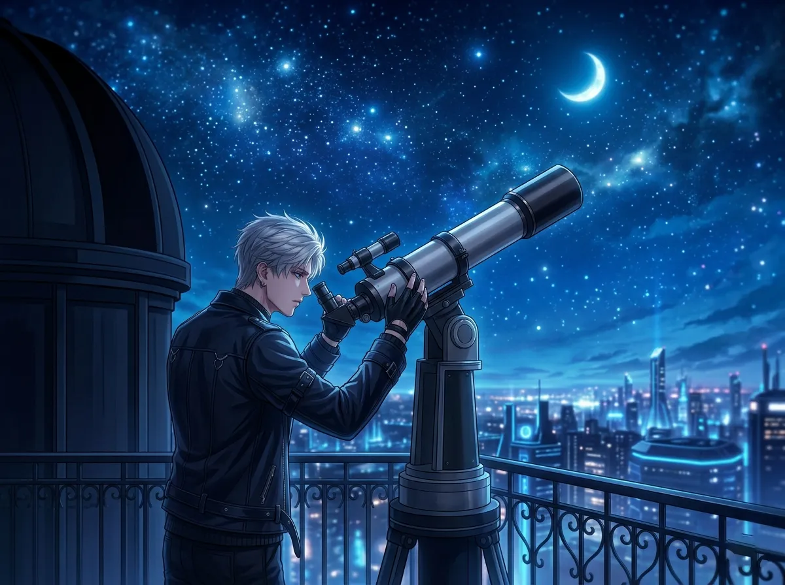
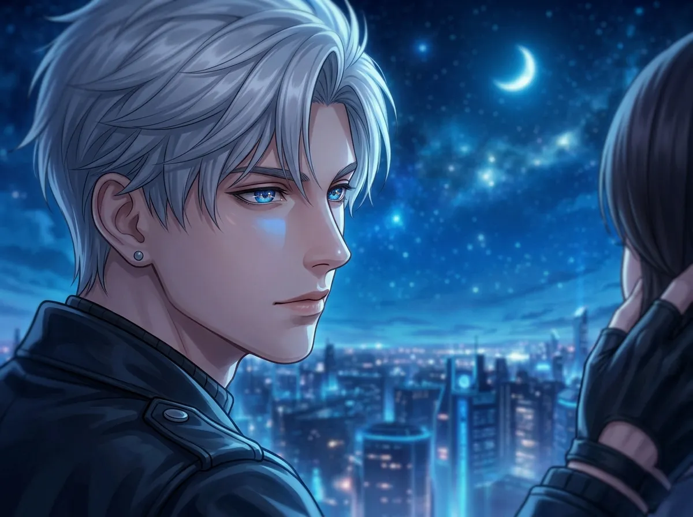
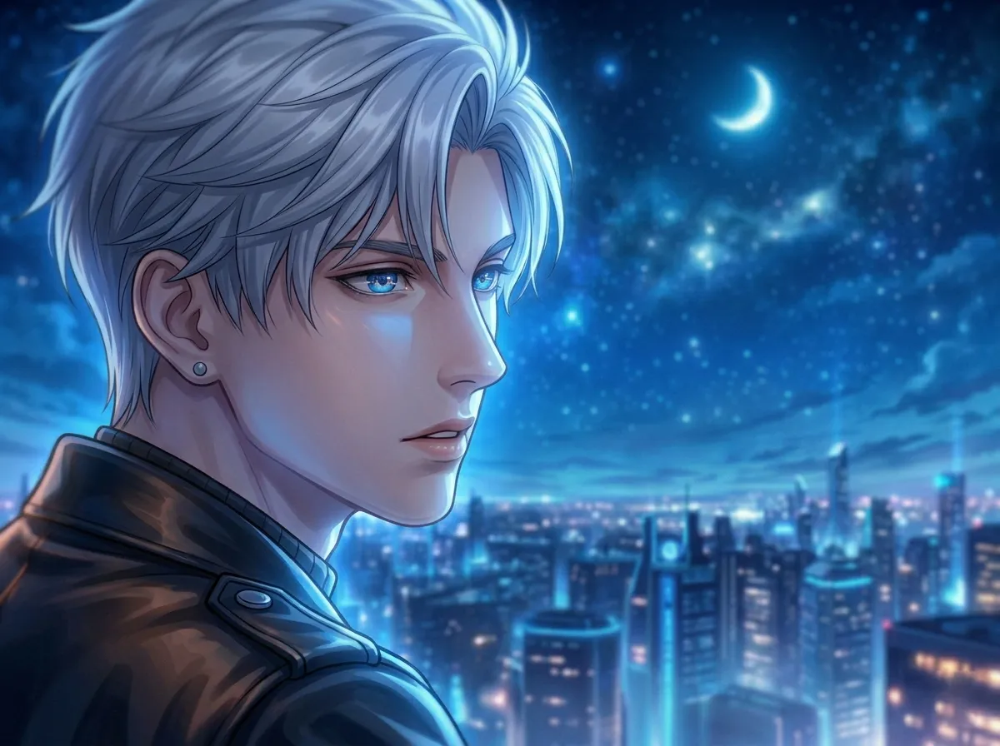
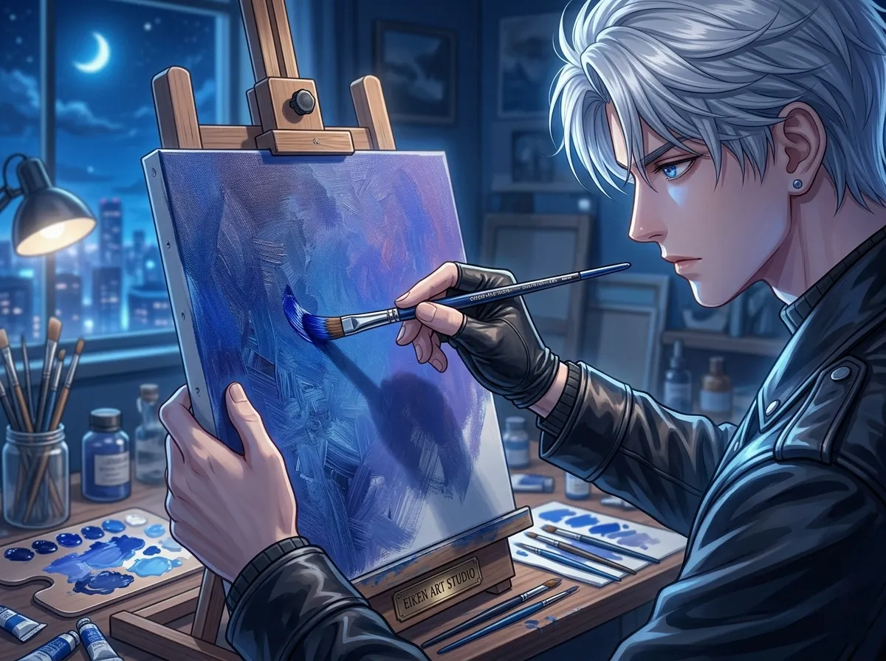
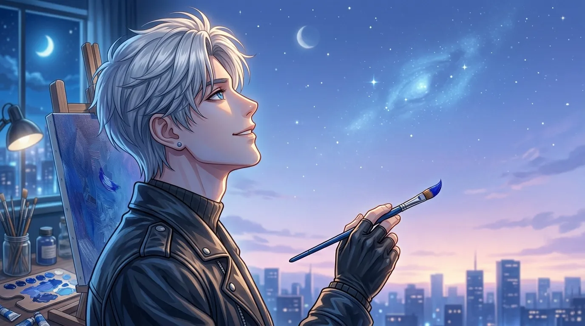

The color he waited in. The color he never forgot.
Blue is the color of the night sky. The color of the stars. The color of the space between them.
Xavier has been looking at blue for two hundred years. More than seventy-three thousand nights. Each one a different shade of the same color.
He doesn't remember when he first noticed blue. He doesn't remember a time when blue wasn't there. It is the background of his existence. The silence between his thoughts.
Blue is the color he waited in. Blue is the color he never forgot.
This is the story of that color. And the one shade he never expected to find.

Seventy-three thousand nights. More or less. He stopped counting after the first century.
Each night was blue. Not the same blue. Some were deep, almost black. Some were pale, gray-blue, the color of exhaustion. Some were clear, vivid, the kind of blue that reminded him why he kept looking.
He watched them all. Every night. The stars shifted. The constellations turned. The blue remained.
Blue was his only constant. The only thing that never changed. The only thing that never left.
He didn't choose blue. It chose him. It was the color of the sky. The color of the stars. The color of the space between everything he had lost.
Blue is not a warm color. It is not comforting. It is not soft.
Blue is the color of distance. Of waiting. Of things that are far away and getting farther.
Xavier lived in blue for two hundred years. It was not a choice. It was the only color available. The only color he could afford.
He didn't know he was tired of blue until he saw something else.

And then she arrived.
He looked at her. He saw her. He saw her eyes.
Blue.
But not the blue he knew. Not the blue of the night sky. Not the blue of the stars. Not the blue of the distance between things.
Her blue was different. It was warm. It was alive. It was the kind of blue that looked back at you.
He had seen every shade of blue. Every possible variation. He had memorized them all. He had cataloged them in his mind like a collection of things he would never touch.
He had never seen that one.
He didn't know there was a blue he hadn't seen. He thought he had seen them all. He thought blue was just blue.
Then he looked at her. And he realized he had been wrong. There was a blue he had never seen. A blue that wasn't cold. A blue that wasn't distant. A blue that was close enough to touch.
He didn't know what to do with that. He had spent two centuries learning how to be with blue. He didn't know how to be with this blue.

They say blue is a cold color. A distance color. A color of sadness and silence.
Xavier knows that. He has felt the cold of blue. He has shivered in blue. He has been alone in blue for two hundred years.
But he also knows that blue can be warm. He knows because he has seen it. In her eyes. In the way she looks at him. In the way she looks at everything.
Her blue is not cold. It is the warmest thing he has ever seen.
It took him a long time to understand that. It took him years. He thought blue was just blue. He thought it was always the same. He thought he knew everything about it.
He was wrong.
He spent two hundred years thinking blue was cold. He didn't know blue could be warm. He didn't know it could be the color of being seen.
She showed him. Not with words. With her eyes. With the way they held his gaze. With the way they didn't flinch. With the way they stayed.
He learned that blue is not always distance. Sometimes blue is closeness. Sometimes blue is home.

He paints her eyes. Sometimes. When the night is too long and the sky is too empty.
He has tried every shade. Every combination. Every technique. He has mixed blues for hours. Days. Weeks.
He never gets it right.
Not because he is a bad painter. Because there is no color that can capture the way she looks at him. No color that can hold the warmth in her eyes. No color that can do justice to the blue he saw that day.
He keeps trying. He will keep trying. Even though he knows he will never succeed.
Because trying is the only way to remember. The only way to keep that blue alive. The only way to hold onto the thing he didn't know he was waiting for.
Some colors cannot be reproduced. Some colors exist only once. In a moment. In a glance. In the space between two people who see each other.
He knows he will never paint it. He knows it is impossible. He knows the blue of her eyes is not a color you can put on a canvas.
But he tries anyway. Because trying is the only thing he can do. Because trying is the closest he can get to keeping her with him.

He spent two centuries looking.
He didn't know what he was looking for. He thought it was a person. He thought it was a purpose. He thought it was something he would recognize when he saw it.
He didn't know it was a color.
He found it in her eyes. A blue he had never seen. A blue that was warm. A blue that was alive. A blue that looked back at him.
He spent two centuries looking at blue. He didn't know he was waiting for the right shade.
Now he knows. Now he has it. Now he is afraid of losing it.
He has seen every shade of blue. He has memorized them all. He has cataloged them in his mind like a collection of things he would never touch.
He has never memorized one. He has never tried to hold onto one. Until now.
He has memorized the blue of her eyes. He has stored it in the place where he keeps the things he cannot afford to lose.
He doesn't tell her. He never tells her. He keeps it to himself. Like a secret. Like a prayer. Like the only color that matters.
He spent two centuries looking. He found it. He is not going to let it go.
Blue was the color he waited in. Blue is the color he found. Blue is the color he will keep. Until the end of his nights.
Xavier spent two hundred years looking at blue. The sky. The stars. The space between things.
He thought blue was cold. He thought blue was distance. He thought blue was all he would ever have.
Then she arrived. And he saw blue the way it was meant to be seen.
Warm. Alive. Looking back at him.
He has memorized it. He will never forget it. He will carry it with him through the rest of his nights. Through the rest of his waiting. Through the rest of his life.
Blue is not a cold color. Blue is the color of being seen.
And he was seen.